RED PLANET FARMING DEVLOG
RED PLANET FARMING - WISHLIST ON STEAM!
Nina Demirjian - April 27 2020
Hello all! Exciting news! You can now
wishlist Red Planet Farming on Steam!
We are finally coming to the end of development and are thrilled that the full project is going to be released for everyone to play. We are planning for a mid-may release of the game!
RED PLANET FARMING NOW AVAILABLE ON COOLMATH GAMES!
Nina Demirjian - April 13 2020
Hello everyone, I know it has been a while since my last post, but we’ve all been extremely busy wrapping up development for RPF! Today I’m happy to share that the first level of Red Planet Farming, Gale Crater, is now available on CoolMath Games!
Check it out here!
Anyways, stay tuned for more release announcements in the coming weeks. We are planning to launch the full game (with all four levels) on Steam very soon! I am so excited for the game to be out!
RED PLANET FARMING - EXPANSION WARNINGS
Nina Demirjian - January 18 2020
In my last post I briefly described that some players were unhappy with the sudden expansion of the settlement in their plots of land, plowing over everything they had built. For a while, this was a mechanic that I stood behind, but I am starting to see the light.
Basically, when players build up their population, the city expands and removes any crops, upgrades, or buildings that they had placed there. Originally this was supposed to be a way to keep players from expanding too fast, and to give them a sense that their settlement really was growing thanks to their hard work. Unfortunately, I think this has been causing a lot of frustration. And I understand why — Red Planet Farming is a strategy game, and people don’t want to feel like the farm that they’ve planned and built up is just being taken away from them. Ultimately, the expanding city was doing a lot to work against the rest of the design of the game.
That all being said, I think the city expansion is still worth keeping in the game, to a degree. I’ve made some changes over the past few days that I really hope enhance the gameplay experience without having to sacrifice the (in my opinion funny) colonists taking over the player’s plots. This includes having the city prioritize expanding into empty plots that the player hasn’t built on, and giving the player a warning for where the city will expand. I’ve attached an image below of how the UI for this all looks:
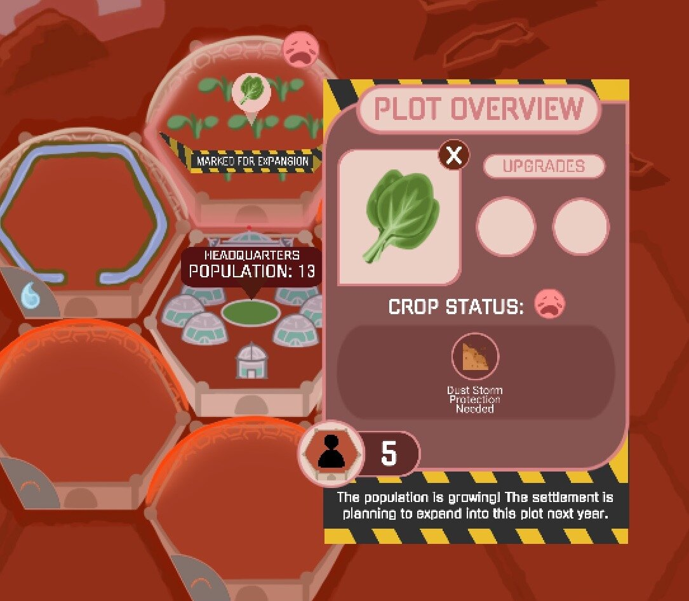
The plot with the yellow and black stripes is due for expansion. The player can still plant and place stuff on it this year, but next year, the city will expand and demolish everything that was on the field. The player can either remove everything on the plot and get some of their money back, or they can plant something and have it grow there, but the plot won’t be theirs again next year.
In addition to this, I’ve also scaled back the number of times that the city expands. To be honest, I think I had a bug in the code before, and that’s why it was expanding so quickly. But I think I’ve ironed it out and have a pretty fair system in place now for the expansions.
RED PLANET FARMING - MAGFEST && UPDATES
Nina Demirjian - January 16 2020
Hello all, long time no post! We have been really busy with the holidays, MAGFest, and, of course, RPF development.
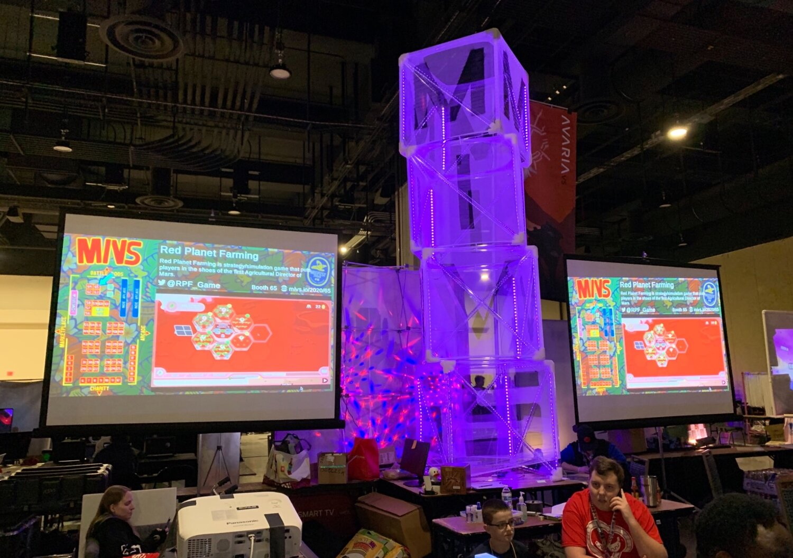
We are really grateful that we were able to attend MAGFest this year. It was our first time ever showing a game! There were a lot of people that came through and played, and the reactions were mostly positive.
That being said, there were a lot of comments about the expansion part of the game. People were pretty upset when the city expanded over their plots, and I understand that they were upset that it felt like the game was messing with their strategy. I’m now realizing that the expanding city was a bit trolly on my part and I really just liked watching people get annoyed, but I think that is not a good enough reason to keep this feature.
Anyways, here are some more recent screenshots of RPF below. We are working on getting all of the art for Gale Crater in:

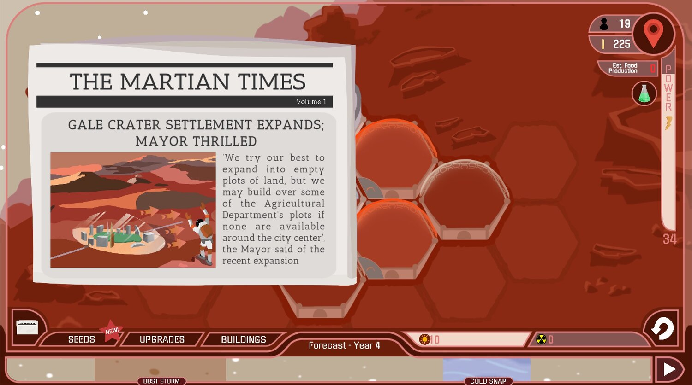
RED PLANET FARMING - WEATHER VFX
Nina Demirjian - November 20 2019
Our artist Sean Park has been working on some visual effects for all of the different weather patterns in the game. So far, he has done dust storm and solar flare particles, and they are making the simulation phase of the game a lot more exciting to watch! He put together these demo scenes of all the particles:
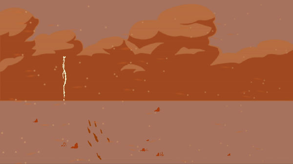

I think my personal favorites from these are the lightning bolts in the dust storm and the distortion effect on the solar flare. I’ll probably end up putting the distortion effect on the cold snap systems too.
Here is some content from the game itself:
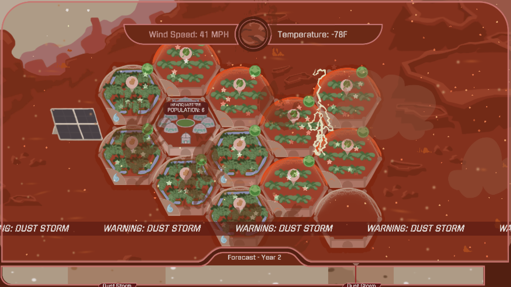

Up next we have some landslide and marsquake effects in the works. Based on the way the dust and solar effects turned out, I think they’ll probably look really good! I was doing some research on landslides and how the rocks fall so I could create a moodboard of landslide visuals as inspiration, and stumbled across
this WILD video on youtube.
Go to time marker 1:31 its literally the craziest thing I’ve seen. And landslides are probably even more dramatic on Mars because there aren’t any trees with roots to help keep the dirt in place!
Anyways I will make another post once the landslide and marsquake effects are in the game!
RED PLANET FARMING - MEDUSAE FOSSAE
Nina Demirjian - November 18 2019
Ok so I’ve actually had the fourth region, Medusae Fossae, implemented for a while now but never made a post about it because I didn’t get around to taking decent photos of it, and it was also not really playable. Its not actually that playable now either, but I’m working on it! This region, along with Utopia Planitia, definitely need a lot of work to catch up to Valles Marineris and Gale Crater, but that’s a priority for me in the next few weeks because I’m starting to get nervous overall about the state of this game currently and how quickly our expected launch times are approaching.
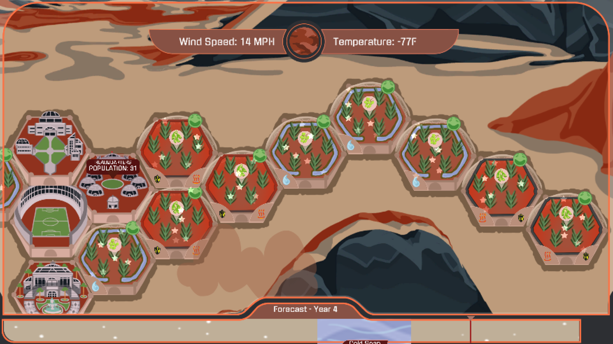
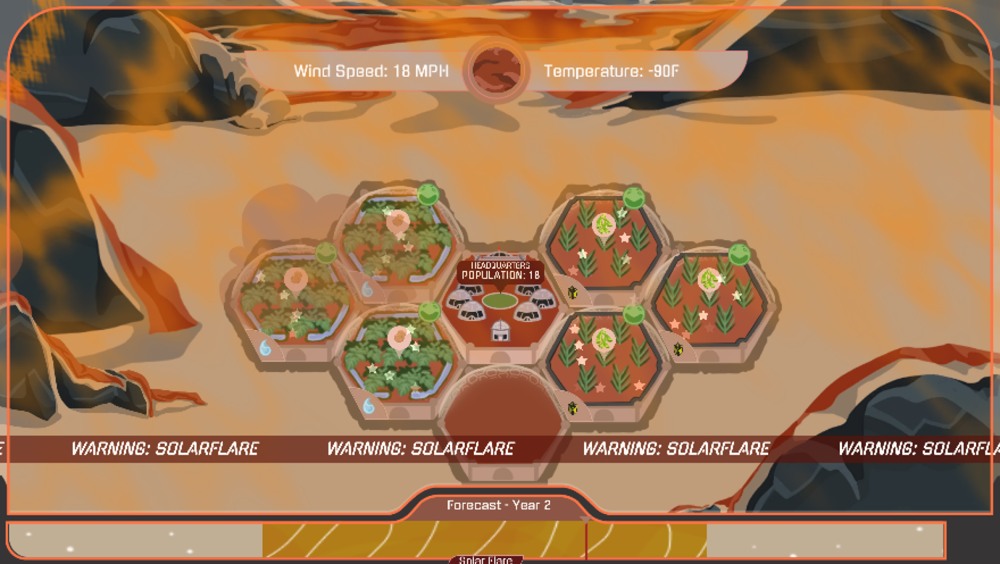
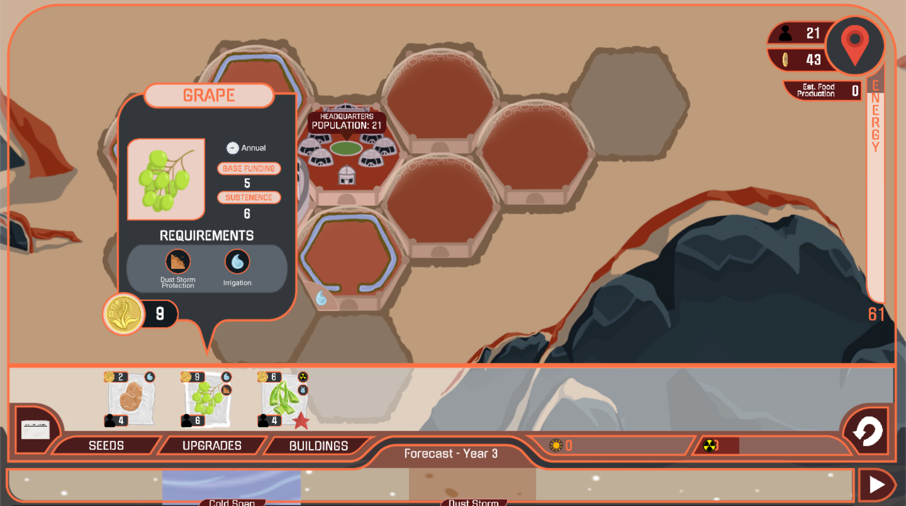
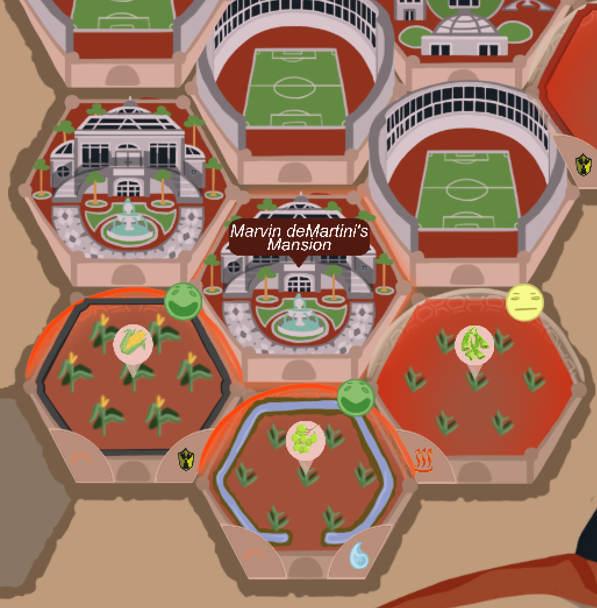
RED PLANET FARMING - Dramatic Before and After
Nina Demirjian - November 17 2019
Today I have an extremely dramatic set of before and after images of the information popups for the seeds, upgrades, and buildings. The “before” images are from the original version of the game that we submitted for the Sloan Grant, and the “after” images are from today.
Here are the before/after for the seed popups:
Here are the before/after for upgrade popups:
Here are the before/after for building popups:
And finally, the before/after for field popups:
I think it’s a bit funny to see what has and hasn’t changed in these images over time. I think the most important improvement here is the new consistency with the icons used in all of the popups. I tried to incorporate icons so that the player will have a better sense understanding how they can protect their crops. All of the popups use these icons to describe their functions.
I think it’s likely that the popups will continue to evolve, but not drastically. I personally think the Plot Overview feels a bit empty. Or maybe not. It just feels like something is off.
I’m also not married to these colors. Of course, the colors change region by region, so it will take some time to match the colors to each region specifically.
RED PLANET FARMING - Food Glorious Food
Nina Demirjian - November 4 2019
Today and yesterday I have been trying to give the game some added visual effects to enhance player experience. Also, a lot of people have been complaining that its not clear that crops get automatically harvested at the end of each year, so I decided to kill two birds with one stone:
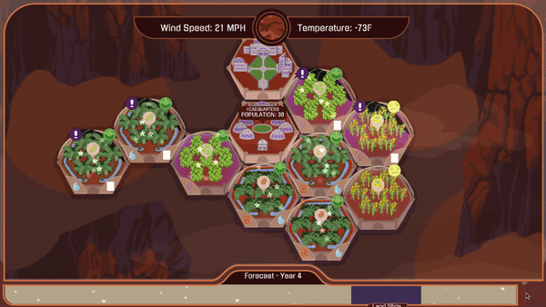
As you can see I’ve decided to spice up the end of the year by having each field spit out some crops to represent a harvest. To do this, I simply made a particle system in Unity that plays briefly on each field, assigning a material with the specified crop to the system.
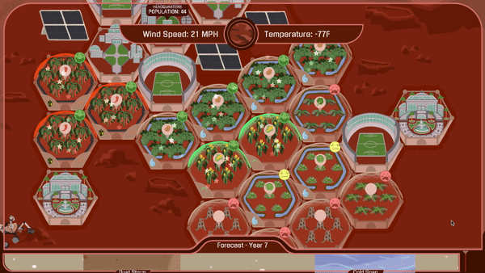
Also here are some funny “bloopers” if you will from when I was testing this feature:
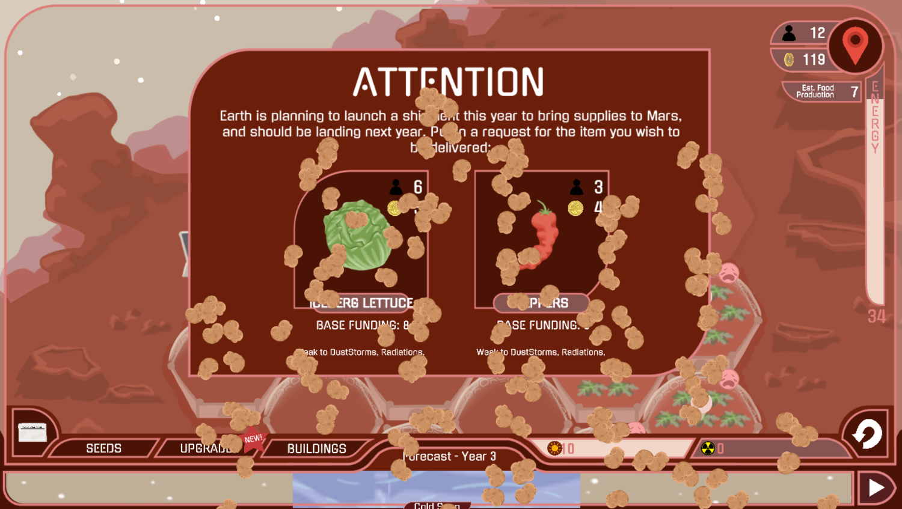
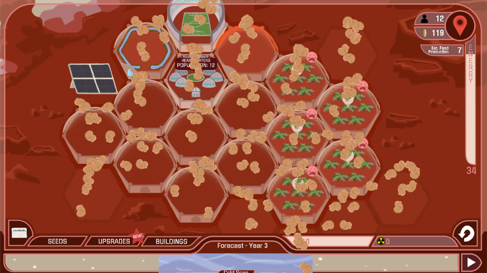
RED PLANET FARMING - New UI
Nina Demirjian - October 20 2019
Hey all. Nina here. I’ve spent this past weekend working for three straight days on Red Planet Farming to prepare for a stream tomorrow (post about that to follow). Anyways, one of the things Noah was working on lately is some new UI so I just thought I’d show it off here. I’ve also been taking photos like these lately because I need to submit some photos to one of my advisors, who is going to make a post about Red Planet Farming on the Game Center website!
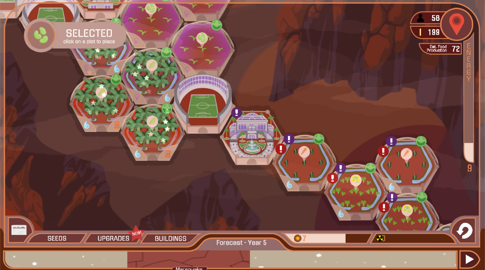
You might be able to see here that I’ve also added a new feature, which is present in the UI on the right. There is now a display that shows the player the ESTIMATED amount of food that they will make that year based on the crops that they have planted.
That estimate, however, does not take into account what will happen if the crops are damaged. So, if the player doesn’t protect their crops, this number will actually be far lower at the end of the year.
This feature threw me through a few hoops to implement. I started off by updating this number every time a player purchased/removed a crop. But the weirdest thing started happening! Plots were disappearing, purchased land wasn’t saved, and headquarters sprites weren’t appearing. I never actually figured out what was going on; mostly because I needed to focus my time on preparing for the stream, and not fixing this bug. So instead, I just implemented the feature in a slightly different, slightly (I think) less-efficient way, but at least now its working!
RED PLANET FARMING at NASA Ames Research Center
Nina Demirjian - October 10 2019
Today was quite an exhilarating day for me. I’ve traveled out to California in order to meet with the science advisors we’ve been working with that are at the NASA Ames Research Center.
I got to meet not only with my advisors, but with some other Mars experts, including a duststorm expert! They all had a lot of interesting ideas for things to put in the game. I’ll list a few:
-Dust devils
-Bees
-Edible tarantulas (!!)
-Algae tanks
-Plum trees to stop bone deterioration (!!)
-Cell cultures to grow meat
-Planetary Protection Laws
Anyways, it looks like I have my work cutout for me! It was a successful day and I feel excited about everything that was suggested today, but I also feel a bit overwhelmed. I’m now going to visit my brother, who also lives in California, for a few days, and I’m aiming to not touch the game in that time. I worry that working on it too much everyday is halting productivity, so I’m taking a break this weekend. But I’ll be back in action next week to prepare for our stream on Death By Audio!
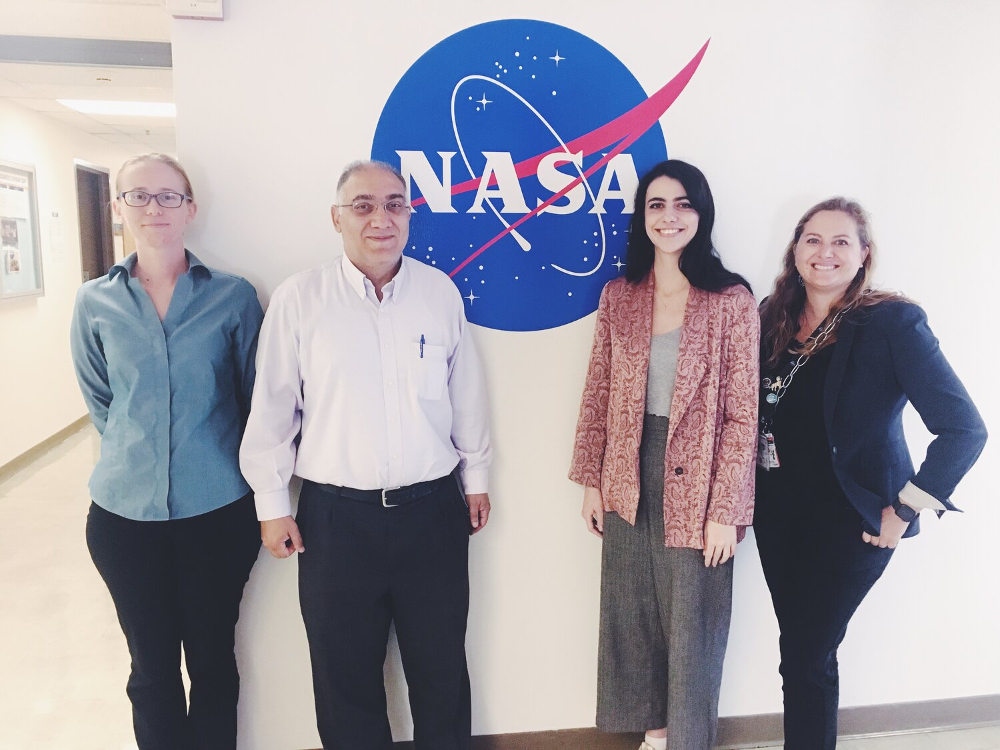
Red Planet Family
Nina Demirjian - October 6 2019
I’ve been working on a small presentation/demo that I will be giving when I visit the NASA Ames research center this week, and realized that we now have a complete happy family with all the regions!
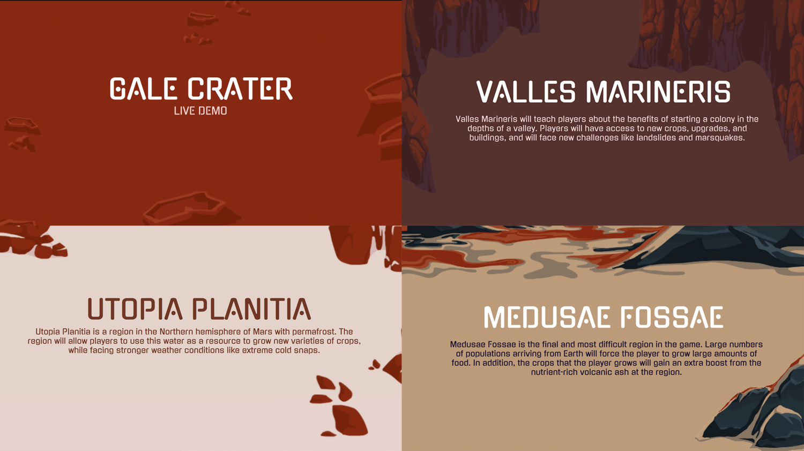
All four regions are now in the game :) Some of them are farther along than others of course. But I wanted to post this anyways because I feel like this collage is just so darn cute. I’ll be talking about Medusae Fossae in a later post probably.
Red Planet Soundtrack
Nina Demirjian - October 5 2019
Hello all. Very exciting post today. I want to introduce Sean Porio, who is the sound designer for Red Planet Farming. He’s been working with us for a while now, but I have some demos of some soundtracks for the game that we want to share now:
Check it out here!
This is a demo for Valles Marineris, which I AM EXTREMELY HAPPY WITH. I think its sounds wonderful! I’m very excited to see (or i guess hear) how the rest of the soundtrack turns out!
Red Planet Website
Nina Demirjian - October 1 2019
Yesterday was an exhilarating and tiring day. The time had come where the page on my portfolio for RPF would not suffice. Alas. It was time RPF’s very own website.
At the beginning of yesterday, I did not know the difference between HTML and CSS (I didn’t actually know what CSS was used for at all). At the end of yesterday, I had a website. What happened between those 12 hours was a long and grueling journey that I will not rehash now.
ANYWAYS, we now have a website and its being hosted on Github pages because, you know, free hosting. You can check it out here:
Red Planet Farming Website
Of course, it still has a long way to come but I’m feeling pretty good about it. Especially that parallax scroll at the top that I definitely didn’t look at example code for.
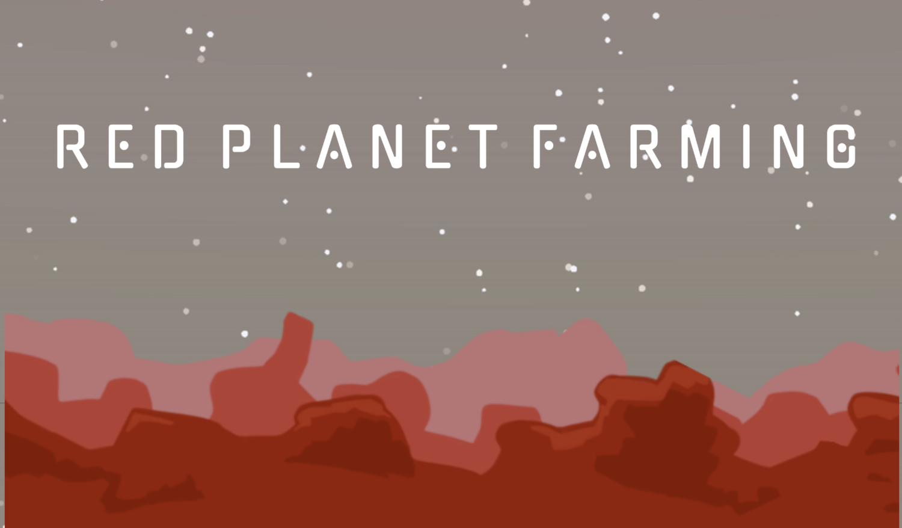
Red Planet Photos
Nina Demirjian - September 25 2019
This is for documentation purposes. I have nothing to say other than I played through Valles Marineris and it was looking good!
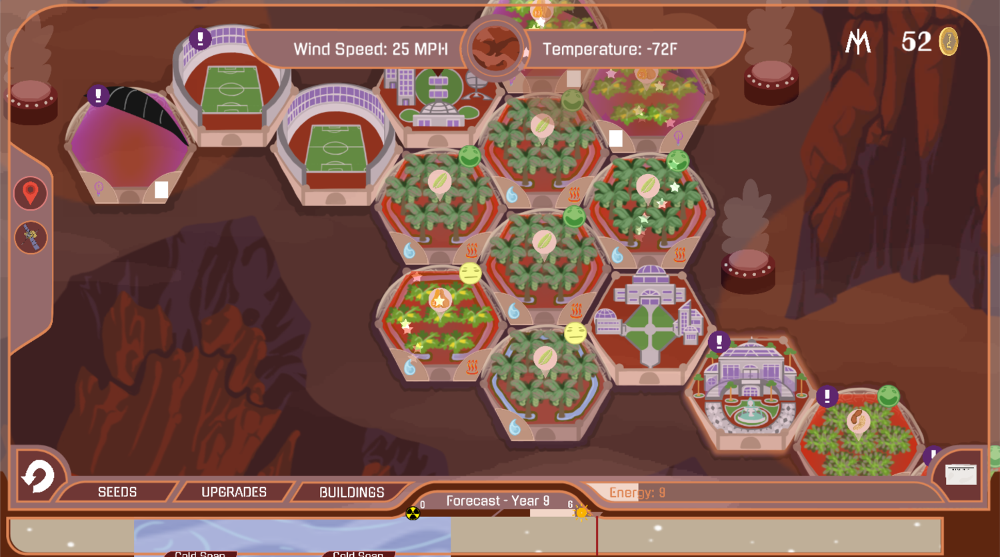
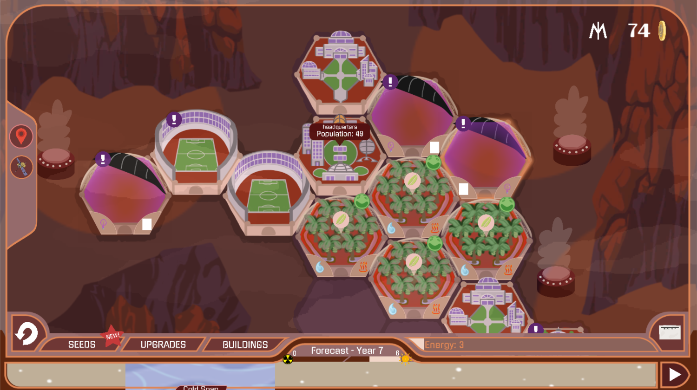
Arugula, Avocados, and Edamame (oh my!) && Updates
Nina Demirjian - September 16 2019
In preparation for our application for a second round of funding from the Sloan Foundation, we have added in a number of new crop animations, including Edamame, Arugula, Avocado, Spinach, and Lettuce.
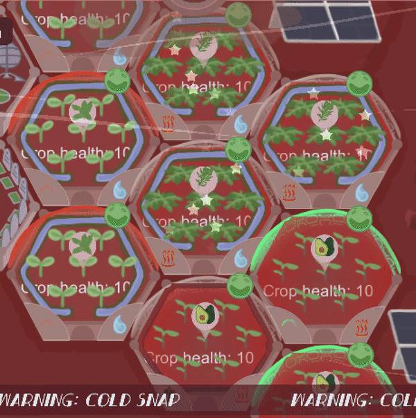
I submitted the application last night, which included a power-point presentation, and a link to our updated Trello page with weekly assignments for all of our team members.
In addition, I’m really excited that we’ve started to incorporate some music into the game. I’ll be making a post dedicated to that sometime soon!
Red Planet Farming - Water Ponds
Nina Demirjian - September 11 2019
I have been playing around with some new mechanics for the third region, Utopia Planitia. I added Landslides and Marsquakes to Valles Marineris, and have been wanting to add something unique like that to Utopia as well.
One of the things I am working on now are little water ponds, which are upgrades that allow you to grow certain types of plants. However, you cannot place any other type of plants on these fields. In addition, plants that need a water pond cannot be placed on fields without water ponds.
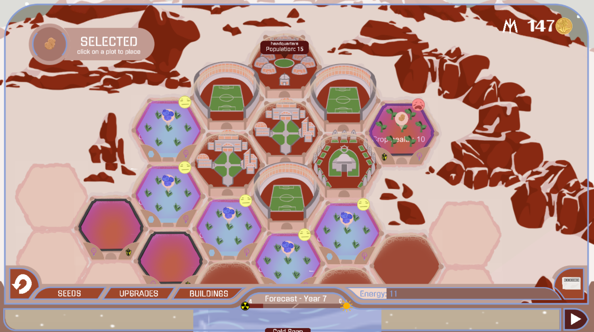
Here, you can see that the blue-ish tiles have water ponds.
Other ideas that I’ve been floating around are dis-jointed groups of land, as well as having land be extremely expensive in this region. I also have it so that the cities expand waaaay faster in this region than in other regions.
Hello Surface Ice
Nina Demirjian - September 5 2019
Here’s some more progress on Utopia Planitia, a region of Mars with permafrost:
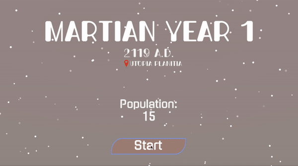
Below I’ve also included an actual image from this region of Mars:

Red Planet Farming - Utopia Planitia
Nina Demirjian - August 31 2019
The third region of RPF is finally in a somewhat presentable state:
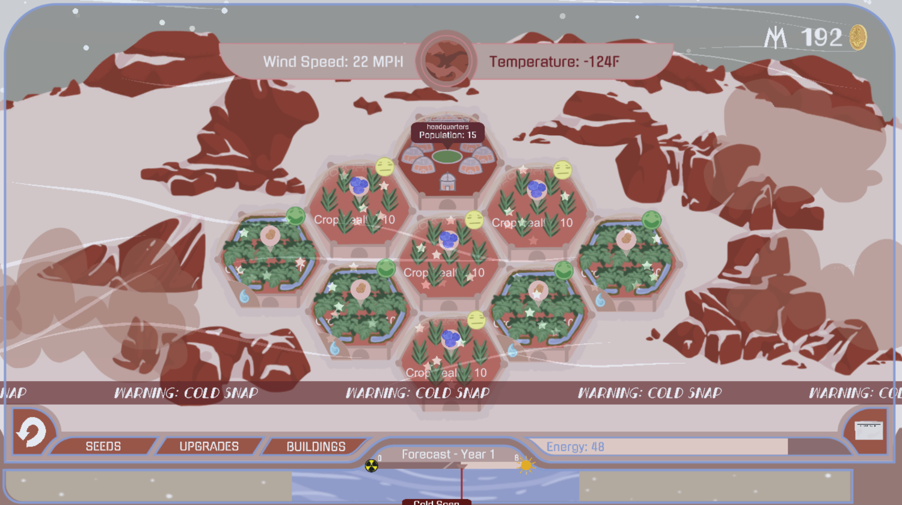
This region has some ice which the player will be able to use as water to grow lots of new plants. The region will also have more extreme weather patterns like harsher storms that will kill crops instantly if they are not protected (!).
We also have some new art for the region as you can see above, as well as some new art for all of the different crops which I will be posting about shortly.
Red Planet Farming - New Power
Nina Demirjian - August 30 2019
*DISCLAIMER/UPDATE: As of May 14 2020, I want to let readers know that there is some incorrect information in this post. This entry discusses wind turbines as a source of energy on Mars, but further research and consultation with my science advisors has shown that there is probably not enough wind on Mars for turbines discussed in this entry to be a realistic source of power.*
Hello to the RPF community. Development is coming along nicely and we are starting to introduce new upgrades and buildings for the player. There will be many options for the player to choose from when it comes to buildings that provide energy. I’ve just finished implementing a wind turbine, which you can see in the image below. I went kind of ham with the turbines because I had a lot of money since I recently put in a cheat code to get more money (not saying what the cheat code is!)
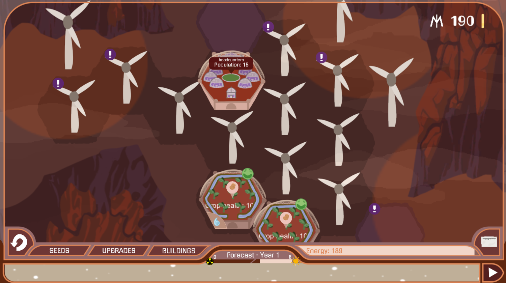
Anyways, types of power generators will vary depending on region. So Valles Marineris will probably not have solar panels like Gale Crater, because it is down in a canyon and probably does not get a ton of sunlight. Similarly, there will be steam turbines that pick up geothermal energy in the canyon, but these turbines will probably not be available in some of the other regions at all.
The Characters of Red Planet Farming
Nina Demirjian - August 22 2019
We have recently hired another artist, Sean Park, who has been doing a lot of character art for RPF:

A lot of these characters are in the news a lot, especially the Mayor and Anita.
The mayor is often seen in the newspaper, making statements about either the colony in general, or about the player and their performance. Anita also shows up in the newspaper for her installments of the “Ask Anita!” advice column, which we are using as a way for players to get a glimpse into the lives of the colonists.
Marvin deMartini is the player’s personal assistant, and gives instructions and tips on how to be a successful Mars farmer.
Red Planet Farming - Notes From Some Playtests
Nina Demirjian - August 18 2019
I’ve recently had my roommates Xan and Francesca and my brother Marshall play through Red Planet Farming to see if they liked it, and to see if there were any bugs that I inevitable miss whenever I play through it myself. It seems like both playtests went really well, and I’m glad that the game is reaching a point where the playthroughs are actually quite long, because it has been a goal of mine to get the gameplay time to be a bit longer than it has been in the past. Here are some images from the playthroughs:
Marshall:
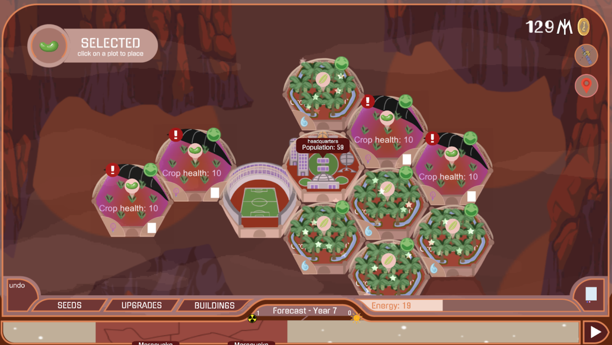
Xan and Francesca:
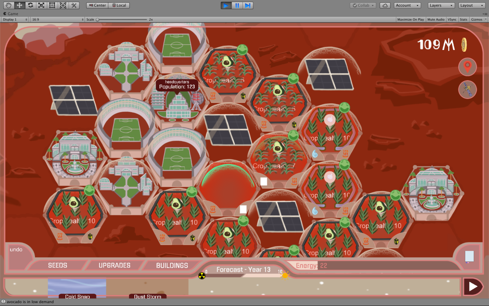
Red Planet Farming - Discounts
Nina Demirjian - August 15 2019
I ended up implementing something today that I had never really thought I would end up doing, which was giving the player adjacency bonuses for upgrades on their fields. It actually was relatively easy to implement. I think I was nervous to do it because I’m pretty nervous about making big changes that impact the game play drastically. It’s going to take a lot of balancing!
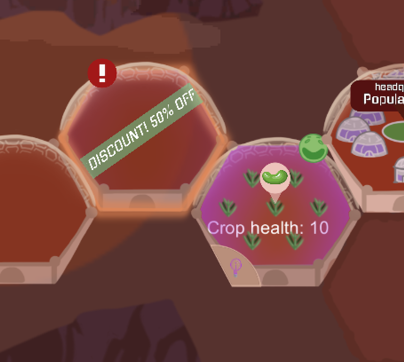
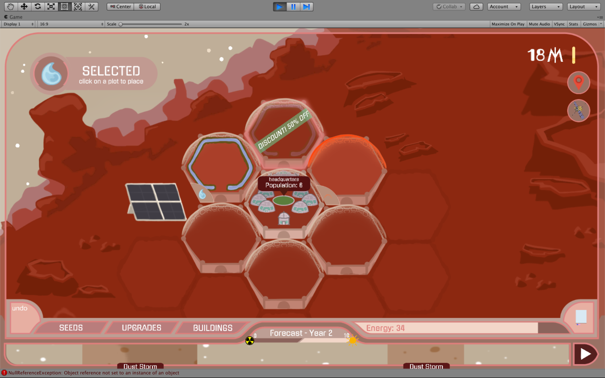
Red Planet Farming - Landslides!
Nina Demirjian - August 14 2019
Today, I was inspired. I don’t know by what. But I was inspired. I had an interesting idea, and luckily it was not too hard to implement. I decided I needed to spice up the Valles Marineris region and make it a bit different from Gale Crater, so I decided to implement “zones” on the farm that are impacted by landslides.
Instead of having only certain crops that are weak to landslides, all crops are now weak to landslides. There are just certain plots that are immune to them. These plots are marked, at the moment, by orange circles, but there will be better indication in the future.
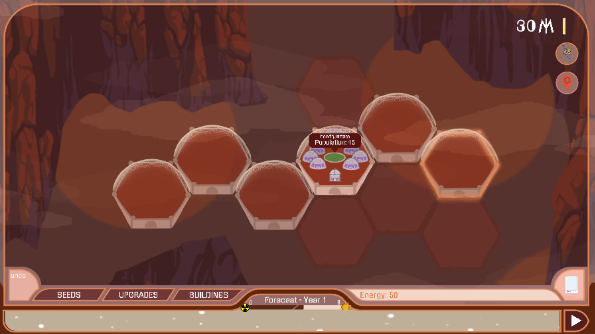
In addition, Landslides are now a surprise >:). That means that they don’t show up on the forecast. And they also mostly appear after Marsquakes, but can appear at any time really.
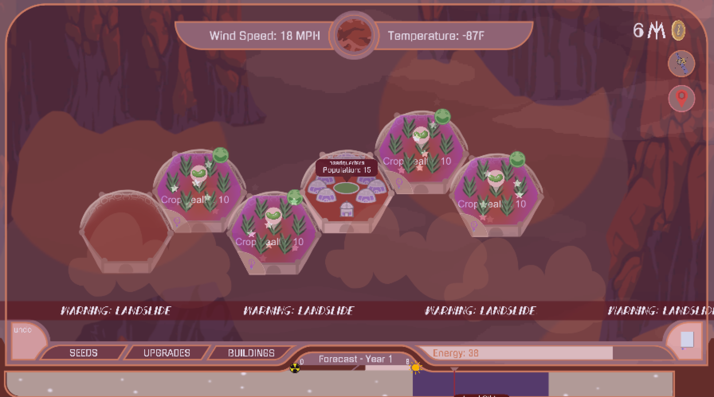
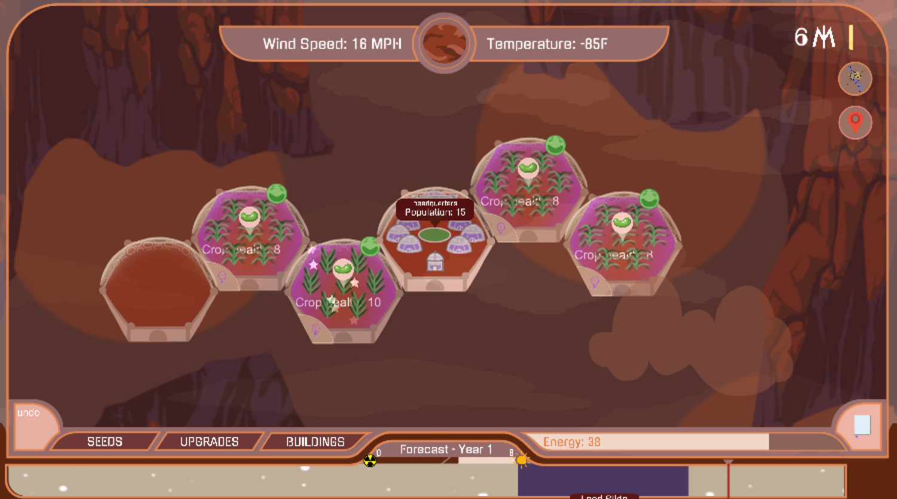
As you can see in the second image, only the crops on the plots in the orange circles were damaged in the landslide. The plot outside the orange circle was safe!
Red Planet Farming - City Improvements
Nina Demirjian - August 9 2019
We’ve also been working a lot lately on improving the cities and population part of the game. We now have a system in place where graveyards start expanding into the player’s farmable plots if the population falls too quickly. On the other hand, if the population rises, buildings like schools and recreational centers start appearing.
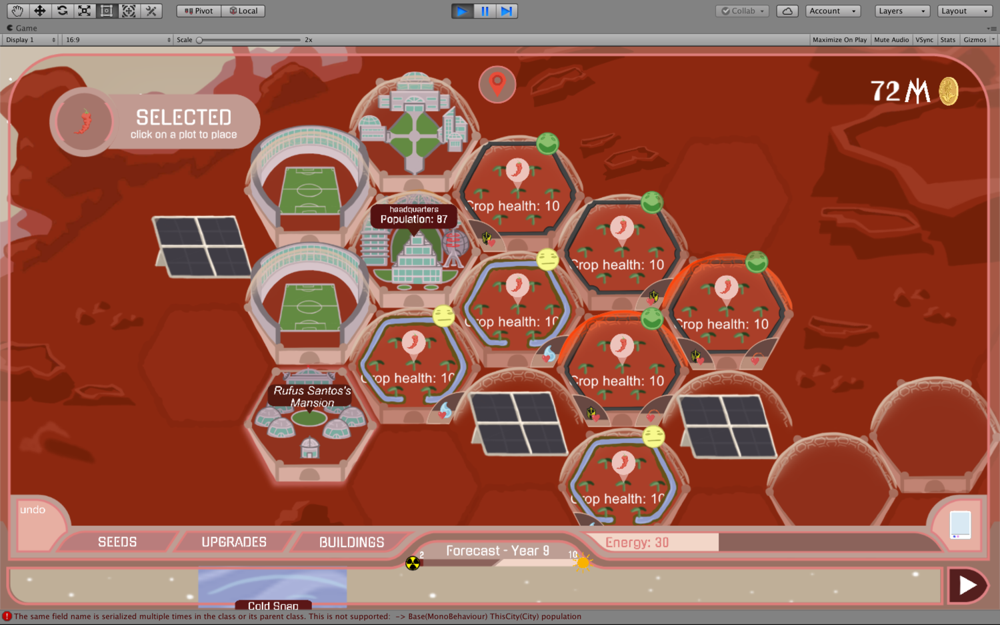
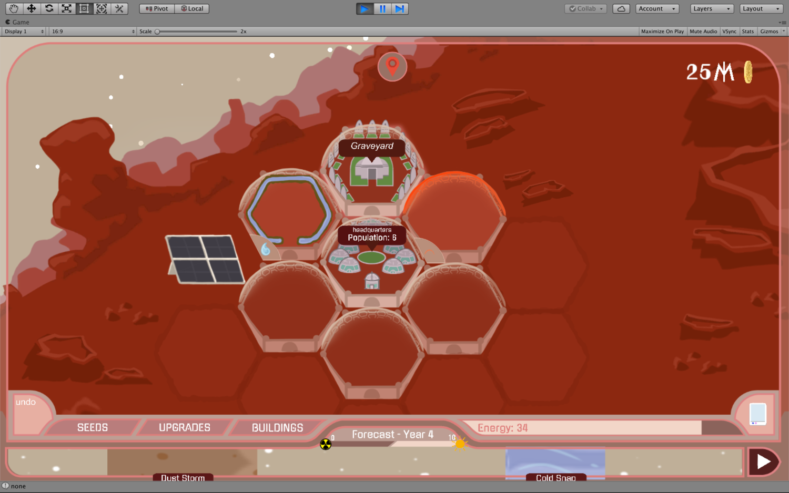
Red Planet Farming - New Valles Marineris Art
Nina Demirjian - August 9 2019
It has been a hot minute since my last post, which I apologize for. But we’ve been working on some big changes over at RPF! The most notable is that players can now save their game progress, meaning they can exit the application and pick up where they left off later. I’ll be sharing some screenshots of the menu screens for this sometime in the future.
In addition, we’ve gotten some new art in for our second playable region, Valles Marineris. I’ve made some posts in the past about it, but I was mostly using dev art to get a sense of what I wanted this region to look like. So now the region looks a lot better than it did before:
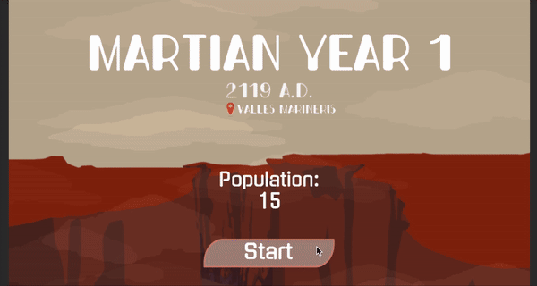
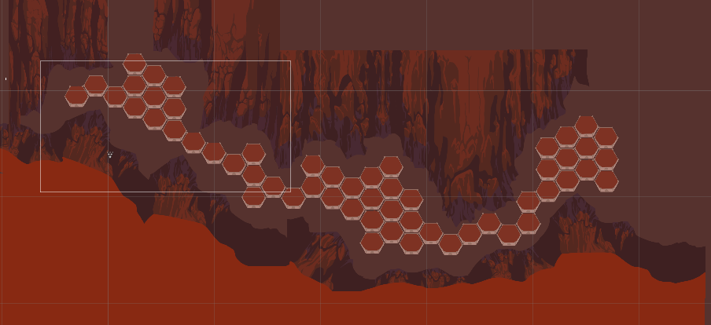
I am beyond happy with how the art for this turned out. I think it looks perfect! Excited to see what the next two regions look like as well.
Red Planet Farming - Marsquakes
Nina Demirjian - July 16 2019
I am starting to work on implementing in new weather hazards into the game so that we can start playtesting the new regions. The new regions all have different weather patterns, and Valles Marineris is prone to landslides and marsquakes. Another explanation for the formation of Valles Marineris is tectonic plate activity, and with recent data from Martian rovers sensing marsquakes, we thought that it would be nice to include them. Just added it to the game. Now I just need to hook it up to the system that determines whether plants take damage from certain hazards or not.
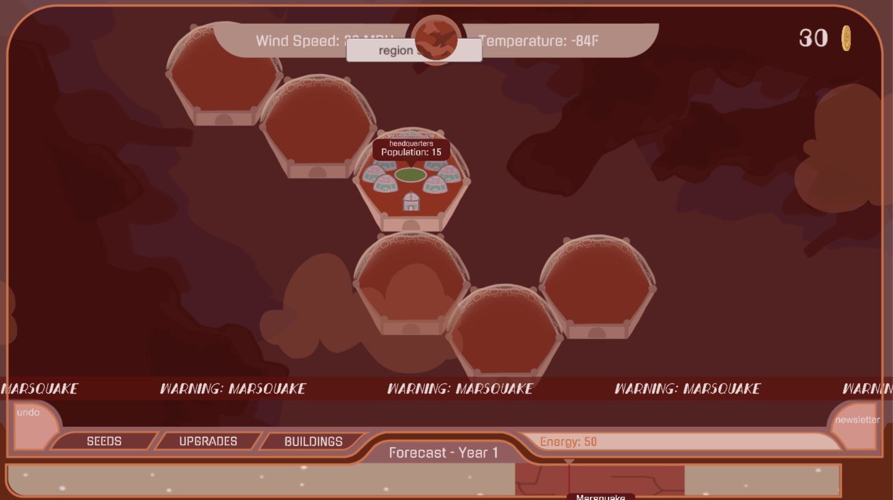
In addition, I finally got through (I think) all of the setup necessary for saving the player’s data for when they want to switch between regions. This will also make it easier in the future when I want the player’s data to be saved when they quit out of the game as well.
Red Planet Farming - Introducing Valles Marineris
Nina Demirjian - July 15 2019
Hey all. We are so excited to finally be getting to a point in the development where we are putting in new levels. Valles Marineris is the first unlockable level in Red Planet Farming. Valles Marineris is a giant canyon on Mars that spans about the size of the United States! It is thought to have been formed by flowing water on ancient mars. It is also a probable landing site for future mars missions. In RPF, crops will need grow lights to survive down in the canyon.
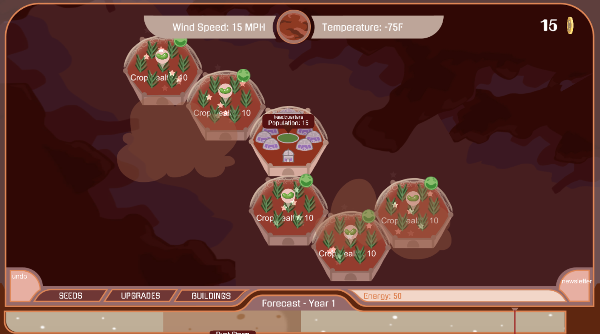
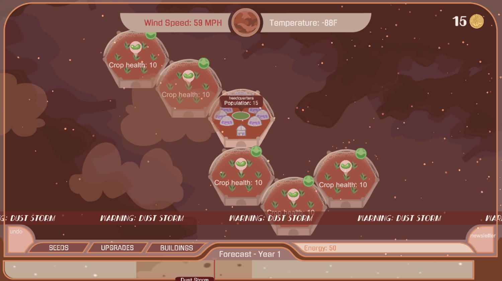
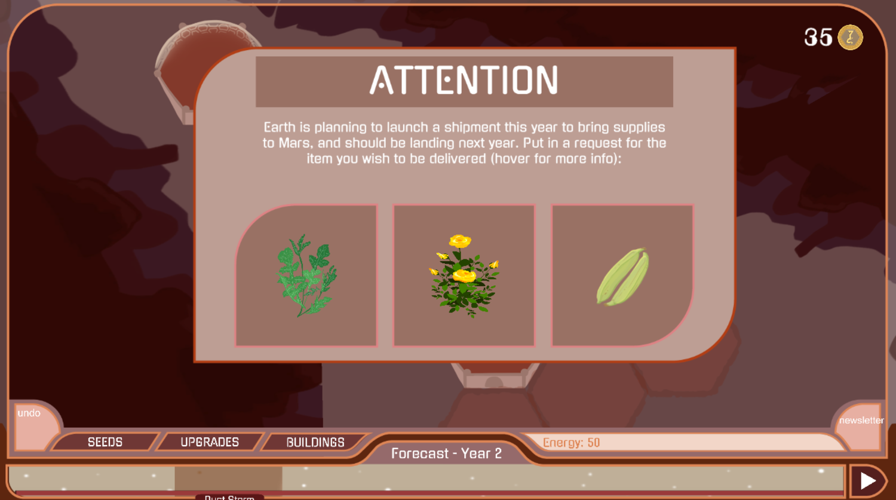
I’ve also taken the time to add a lot more crops into the game, including crops that are a bit more realistic for a martian mission, ie leafy greens like spinach and lettuce.
An Exciting Blurb From our Artist, Noah
Nina Demirjian - June 27 2019
Hello all. Today we have an exciting guest post written by our fearless artist, Noah. I asked her to describe herself a little bit so that you all could get to know her better. Here’s what she has to say:
“Hey, I'm Noah and I'm working on the visual assets for Red Planet Farming! I guess a little about me, I'm a rising fourth-year at the NYU Game Center and the NYU Film & TV program studying games and animation. Uhh and I guess in these kinds of things people tend to mention that they like games and dogs and stuff and I do like games and dogs and stuff but I'm not sure what to say other than that?? Idk, but if you do wanna reach out about games or dogs or stuff I guess you can DM me on Twitter or something (@phlfp). Anyway I hope y'all are enjoying the game so far, and if you have any feedback on any visuals and UI and anything else related, feel free to reach out!”